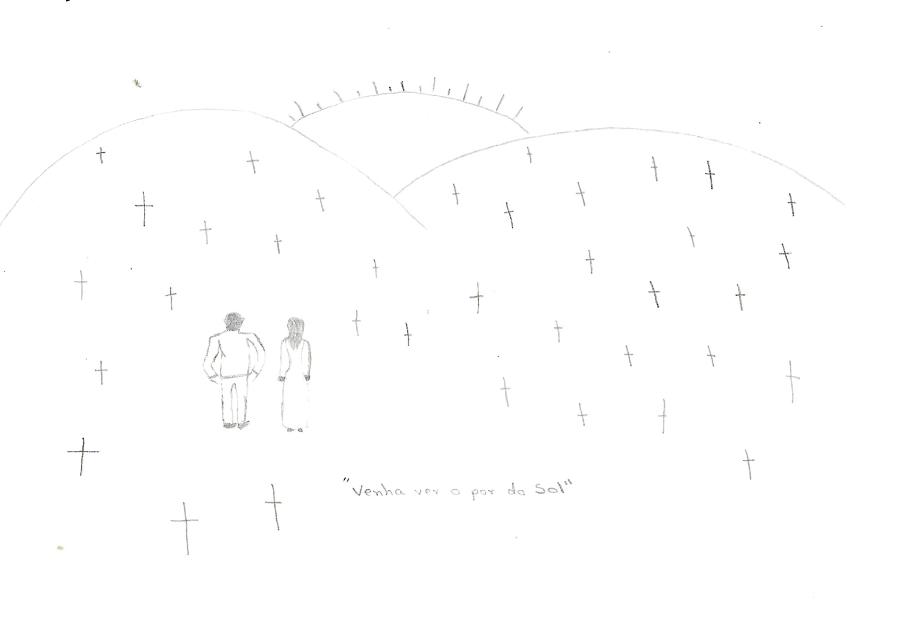
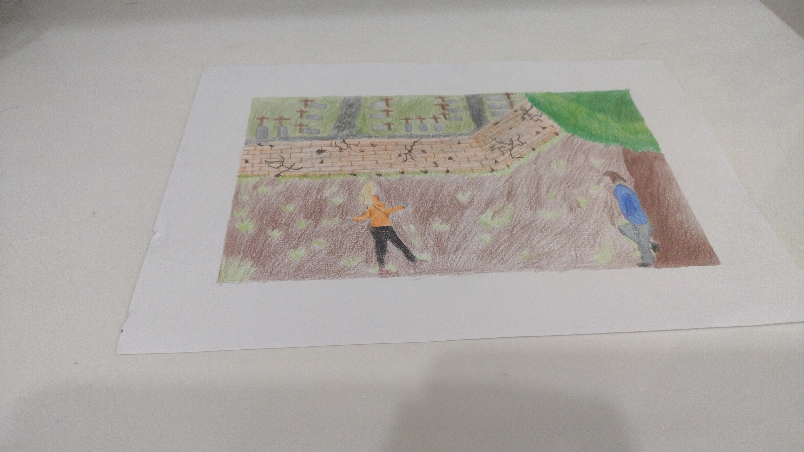
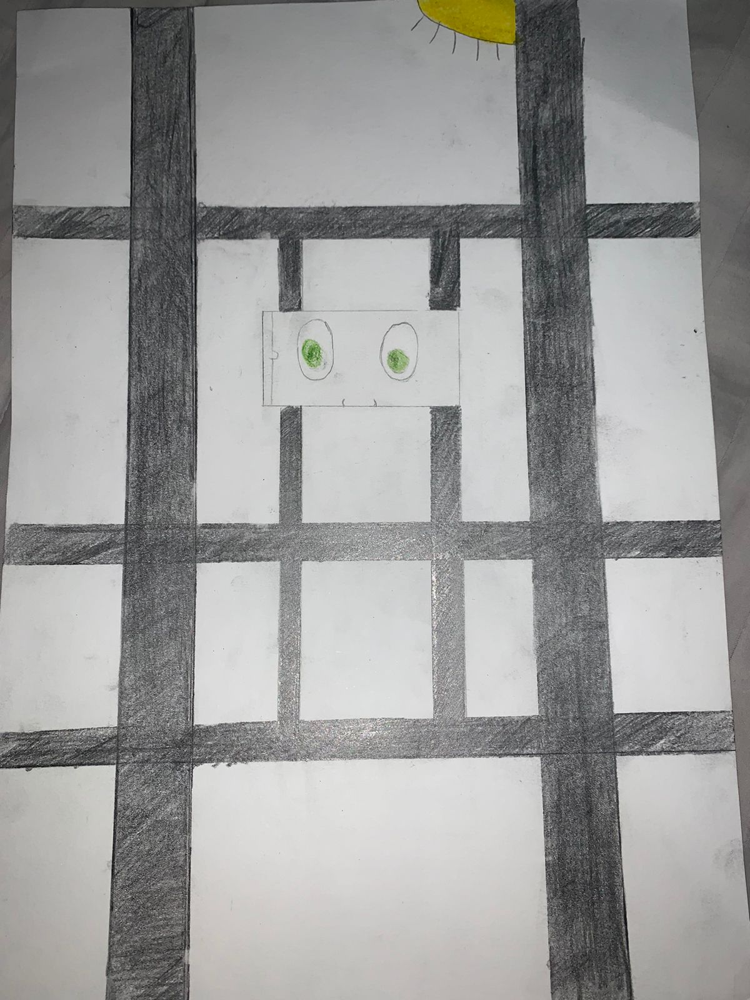

Venha ver o pôr do Sol
Resumo da hisória para quem não a conheci:
Essa história se passa em um lugar afastado para um último encontro entre amigos. Onde um deles é um homem
muito pobre que nãotem nada a perder que se chama Ricardo e uma mulher elegante que se chama Raquel. E o
local escolhido pelo Ricardo é um cemiterio abandonado, para ver um lindo pôr do Sol. Mas na verdade isso
não passa de um truque que Ricardo havia planejado. No momento que chegam a uma suposta capela da família de
Ricardo que já fazia um tempo que Ricardo não vizitava, durante um dialogo Raquel tem um grande descoberta
que da um desfecho na história e tudo muda, com Ricardo a trancando na capela e indo embora como se nada tivesse
acontecido. Raquel fica desesperada e solta um gripo desumano que a cada passo diminuiogo ali não ouvindo mais.
Giovane Manoel
Eu imaginei como poderria ser a capa para a história.
O desenho mostra Raquel e Ricardo no cemitério abandonado.
Guilherme Gil
Eu escolhi essa parte da historia, porque ela mostra o momento de
reenconto dos personagens, depois de muito tempo sem se ver, para um
ultimo encontro dos dois.
O desenho mostra o Ricardo encostado na árvore e Raquel o reencontrando
com o cemierio ao fundo ali próximo.
Nesse passeio o destino é um cemiterio abandonado que supostamente teria
uma bela vista para o pôr do Sol.
Kauan Vittor
Eu escolhi essa parte da história proque pra mim é a parte da história que
demonstra na vítima o maior medo e sem saber o que fazer deixando quem le a
história com o mesmo sentimento que a Raquel.
A parte que Ricardo prende raquel na capela, e vai embora como se nada tivesse
acontecido naquele momento.
O desenho mostra o momento em que Raquel esta na parte de baixo da capela e
somente seu olhos verdes claros aparecem ao lado das grades.
Lucas Azevedo

Eu escolhi desenhar um cemitério porque ele se passa muitas cenas importantes.Tem como cenas
importantes a corversa que eles tiveram sobre a família do Ricardo, a intenção do Ricardo para
mostrar a Raquel o pôr do Sol mais lindo do mundo e sobre a prima de Ricardo ser parecida com Raquel.
A cruzada é uma filme antigo de ação e mto sangue, que conta de vários cavaleiros e seus reis, é um jovem
ferreiro francês, que guarda luto pela morte de sua esposa e filho. Ele recebe a visita de seu pai, que é
também um conceituado barão do rei de Jerusalém e dedica sua vida a manter a paz na Terra Santa. Balian decide
se dedicar também à esta meta, mas após a morte de Seu pai ele herda terras e um título de nobreza em Jerusalém.
Determinado a manter seu juramento, Balian decide permanecer no local e servir a um rei amaldiçoado como cavaleiro.
Nisso ele se apaixona pela princesa irmã do rei.